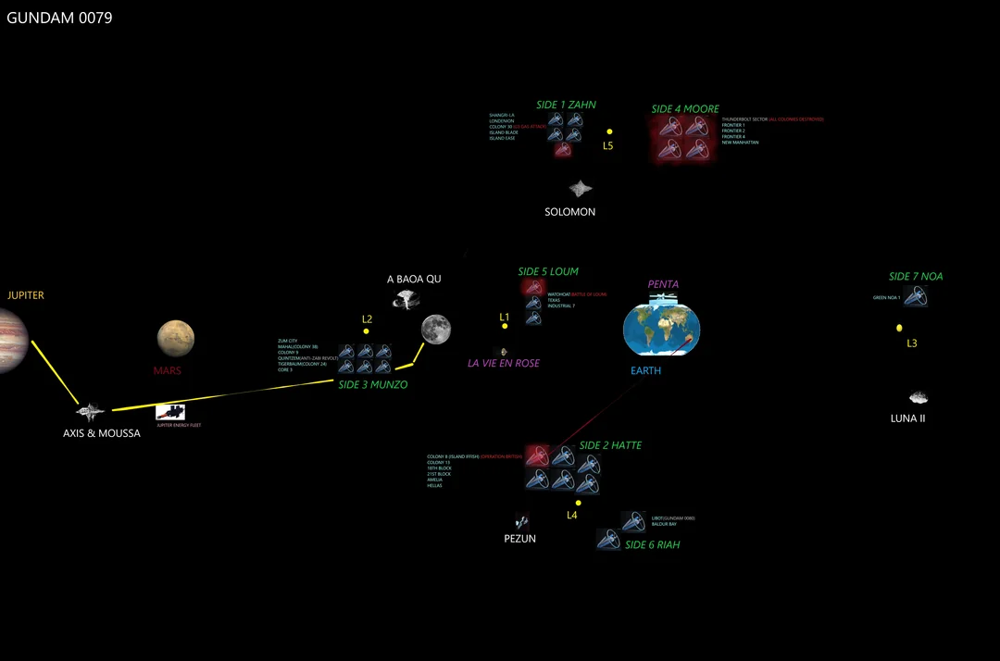

Guerra de Un Año
Conflicto entre la Federación Terrestre y el Principado de Zeon. Introducción del RX-78-2 Gundam y el piloto Amuro Ray.

El Universal Century es la línea temporal original de Gundam. A continuación se presenta una cronología de los eventos más importantes.
Conflicto entre la Federación Terrestre y el Principado de Zeon. Introducción del RX-78-2 Gundam y el piloto Amuro Ray.
Operación Stardust liderada por restos de Zeon, causando grandes cambios políticos en la Federación.
Conflicto entre los Titanes y el AEUG. Aparición del Zeta Gundam.
Enfrentamiento final entre Amuro Ray y Char Aznable. El destino de la humanidad queda en juego.
El misterio de Laplaces Box amenaza con cambiar el futuro del Universal Century.